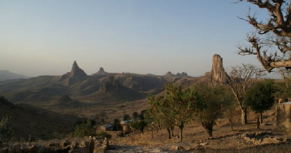

Categorie(s):
savane,
stepe
La région de l’Extrême-Nord est l'une des plus belles régions touristiques du Cameroun. Son relief est dominé par la steppe et la savane herbeuse, entrecoupé de massifs aux formes tourmentées et étranges tels que les paysages pittoresques et enchanteurs des Kapsikis très visités par les touristes. Rhumsiki est un véritable haut lieu du tourisme camerounais. Peuple de l’arrière pays, les populations de l’Extrême-Nord ont su conserver une culture authentique qui se manifeste à travers l’architecture, les créations artistiques, l’artisanat, les traditions et le folklore des Foulbés, des Matakams, des Toupouris, des Massas, des Kotokos, des Kirdis, des Arabes Choa, des Mousgoums, des Mandaras, des Mofous,... La région de l’Extrême-Nord est surtout célèbre grâce au parc national de Waza, le parc le plus connu, le plus visité ainsi que le plus réputé du Cameroun et de toute l’Afrique francophone.